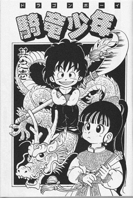
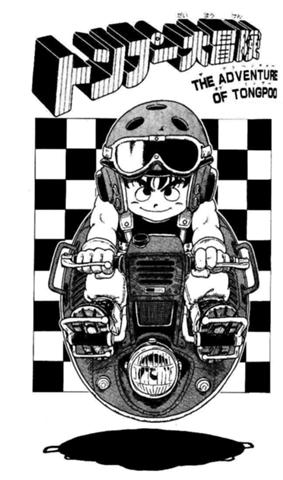
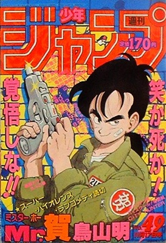

Mangás
Awawa World (1977, nunca publicado comercialmente, entretanto fora compilado nas edições 5 e 6 dos boletins BIRD LAND PRESS, destinados ao fã clube oficial Toriyama Akira Hozonkai - 鳥山明保存会).
Wonder Island (1978-1979, 2 revistas simples)
Today's Highlight Island (1979, 1 revista simples)
Tomato (1979, 1 revista simples)
Dr. Slump (1980-1985, 18 tankōbon, kanzenban)
Escape (1981, 1 revista simples)
Hetappi (1982, 1 tankōbon, lição de desenho) - Co-autor: Akira Sakuma
Pink (1982, 1 revista simples)
Mad Matic (1982, 1 revsta simples)
Chobit (1983, 2 revistas simples, Não confundir com Chobits, desenhada por Clamp)
Dragon Boy (1983, 2 revistas simples)
Tongpoo (1983, 1 revistas simples)
Toriyama Akira's Manga Theater Vol.1 (1983, 1 tankōbon)
Dragon Ball (1984-1995, 42 tankōbon, depois redistribuído em 34 kanzenban edições especiais)
Mr. Ho (1986, 1 revista simples)
Lady Red (1987, 3 revista simples, mangá com temática adulta)
Kennosuke (1987, 1 revista simples)
Sonchoh (1987, 1 revista simples)
Mamejiro (1988, 1 revista simples)
Toriyama Akira's Manga Theater Vol.2 (1988, 1 tankōbon)
Karamaru (1989, 1 revista simples)
Wolf (mangá) (1990, 1 revista simples)
Cashman Saving Soldier (1991, 3 revistas simples - 1998, 1 tankōbon)
Dub & Peter 1 (1992, 4 revistas simples)
Go! Go! Ackman (1993, 11 revistas simples)
New Dr. Slump (1994, 3 tankōbon finos, nada relacionados com o anime de 1998)
Chotto Kaettekita DR Slump (terceiro mangá)
Tokimecha (1996, 1 revista simples)
Alien X-Peke (1997, 1 revista simples)
Bubul (1997, 1 revista simples)
Toriyama Akira's Manga Theater Vol.3 (1997, 1 tankōbon)
Cashman Saving Soldier/New Cashman Saving Soldier (1998, 1 tankōbon)
Cowa! (1998, 1 tankōbon)
Tahi Mahi (1998, 1 tankōbon)
Kajika (1999, 1 tankōbon)
Sand Land (2000, 1 tankōbon)
Neko Majin (2000-2005, 5 revistas simples, 1 tankōbon/kanzenban)
Kochikame (2006, 1 revista simples, omake)
Cross Epoch (2006, 1 revista simples)
Dr. Mashirito Abale-chan (2007)
Sachie-Chan Guu! (2008, 1 revista simples) (em parceria com Masakazu Katsura)
Biosphere 2030 (2009)
Jiya (2010) (em parceria com Masakazu Katsura)
Kintoki (15 de novembro de 2010, One-shot lançado na Weekly jump)
Ginga Patrol Jako (Mangá Comic dezembro 2013 Revista V-Jump)
Dragon Ball Minus (2014, 1 Tankōbon, Weekly Shōnen Jump)
Dragon Ball Super (Em publicação na revista V-Jump)
Mysterius Rain Jack (1978, nunca publicado comercialmente, entretanto fora compilado nas edições 3 e 4 dos boletins BIRD LAND PRESS, destinados ao fã clube oficial Toriyama Akira Hozonkai 鳥山明保存会).




